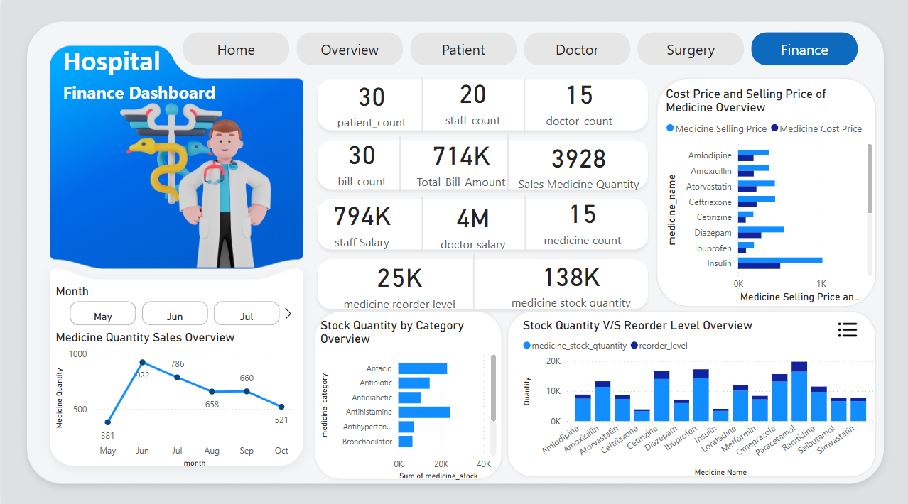
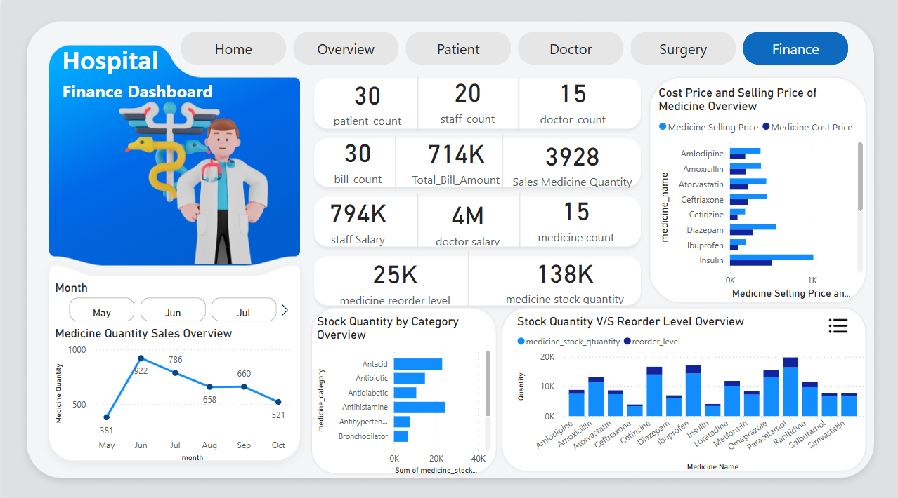

Home

Overview
Patient
Doctor
Surgery
Finance
A professional, end-to-end analytics solution that turns raw hospital data into crystal-clear insights. Built with Power BI (front-end), SQL (data mart), and DAX (business logic), the dashboard lets clinicians and administrators track quality of care, operational efficiency, and financial health in real-time.
View Hospital Intelligence DashboardObjective: Build a single, unified dashboard that consolidates patient, clinical, inventory, and financial data—enabling faster, data-driven decisions and improved patient outcomes.
Highlights
| Layer | Tools / Frameworks | Purpose |
|---|---|---|
| Data | SQL Server | ETL, views, stored procs |
| Modeling | Power BI Data Model, DAX | Business logic & calculations |
| Visualization | Power BI Desktop / Service | Interactive dashboards |
| Version Control | Git + GitHub | Source management & CI tracking |
Home
Overview
Patient
Doctor
Surgery
Finance
| Section | Description |
|---|---|
| Hero Banner | A bold welcome message: "Transforming Healthcare Data into Actionable Insights" with a subtitle that introduces the dashboard's role in streamlining hospital analytics. |
| Real-Time Monitoring KPIs | Central live metrics covering Patients, Treatments, Billing, Medicines, Beds, Staff, Appointments, Admissions, and Discharges—powered by real-time SQL updates. |
| Page Navigation | Transparent button-style navigation for quick access to: Overview, Patient, Doctor, Surgery, and Finance pages. |
| Interactive Tiles | Clickable, icon-based tiles that intuitively guide users to detailed analytical views. |
| Footer (Credits) | Developed by Vyomesh Katariya – GitHub Profile » |
| Feature / Control | Description |
|---|---|
| Global KPI Cards | Real-time counts for Doctors, Patients, Staff, and Bills. |
| Bed & Medicine Dual Donut (Button-Driven) | A transparent button labeled "Medicine / Bed Chart" toggles a pair of donut charts: • Bed Availability % (Available vs Occupied) • Medicine Pricing Mix (Cost vs Selling Price). |
| Real-Time Medicine Purchase Metrics | Dynamic metrics showing daily and monthly quantities of medicines purchased by patients, refreshed via DirectQuery. |
| Upcoming Appointments (Button Slicer "New") | A button-style slicer filters to new / future appointments, instantly updating all related visuals. |
| Patient Charges Type | Stacked column chart breaking down charges (consultation, surgery, pharmacy, etc.) by patient type or department. |
| Admissions vs Discharges | Stacked bar chart comparing counts of Admission and Discharge patients for the selected date range. |
| Discharge KPIs | • % Discharged card (ratio of discharged to admitted patients). • Admission Count and Discharge Count cards for absolute numbers. |
| Operational Trend Line | Line chart showing monthly admissions across the fiscal year, highlighting peaks and troughs. |
| Resource Snapshot | Heat-map / table of active staff, available doctors, and resource utilization in real time. |
| Interactive Filters | Slicers for Month, Department, and Doctor ensure every visual reacts instantly to user selections. |
A real-time, drill-through workspace that surfaces every key insight for an individual patient—clinical, financial, and experiential.
| Section / Visual | Purpose & Behaviour |
|---|---|
| Edit Button (Bookmark Slicer) | 🔖 Top-left "Edit" button reveals a button-style slicer listing all patient names. • Selecting a patient forces the page to re-filter ("force quit") and drives every dynamic title and visual on the page. |
| Dynamic Page Title | 🏷️ Automatically changes to "Patient Overview – [Patient Name]" once a patient is selected. When no patient is selected, it falls back to "Global Patient Overview". |
| Patient Profile Cards | 📇 Personal details: Name · Age · Gender · Contact · Rating given to doctor (feedback). |
| Admission & Discharge Details | 📅 Cards show Admission Date, Discharge Date, and Length of Stay. |
| Medicine Tracking Metrics | 📈 Two metric cards—Today's Quantity and Month-to-Date Quantity—refresh via DirectQuery to reflect real-time purchases. |
| Medicine Quantity (Clustered Bar) | 💊 Displays, per medicine SKU, quantity purchased by the selected patient. Dynamic title: "Medicine Purchases by [Patient Name]". |
| Bill Charges (Clustered Bars ×2) | 💳 Two clustered bar charts break down the patient's billable charges by category (e.g., Consultation, Surgery, Pharmacy, Misc.). Separate views for absolute ₹ amount and % share. |
| Financial KPI Cards | 💰 Total Bill Amount and Total Medicine Quantity for the selected patient. |
| Real-Time Line Chart | ⏱️ Daily timeline of medicine purchases (day & month granularity) for live consumption monitoring. |
| Interactivity & Sync | • All visuals respond instantly to the edit-button slicer. • Dynamic text titles use SELECTEDVALUE() to embed the patient name. • Tooltips show additional context (doctor, time, SKU). |
Note: Each visual can be set to Sort → Count / Amount → Descending for quick high-to-low analysis.
A real-time workspace that unifies schedule, performance, and financial metrics for each doctor.
| Section / Visual | Purpose & Behaviour |
|---|---|
| Edit Button (Bookmark Slicer) | 🔖 Top-left "Edit" button triggers a bookmark that slides in a button-style slicer containing every doctor's photo + name. — Selecting a doctor instantly re-filters the page to that profile. |
| Dynamic Page Title | 🏷️ Automatically renders "Doctor Dashboard – [Doctor Name]" when a doctor is chosen; defaults to "Overall Doctor Summary" otherwise. |
| Doctor Profile Cards | 🧑‍⚕️ ID, Department, Years of Experience, Qualification, Joining Date, and Avg. Patient Rating â. |
| Appointment Slicer | ğŸ›ï¸ Dedicated slicer lists each upcoming or historical appointment (Patient Name + Date/Time) with status tags (Scheduled / Completed) for rapid drill-in. |
| Financial Gauge | 💸 Gauge visual powered by real-time DAX: Doctor Commission % vs. Estimated Patient Amount. |
| Financial Cards (Live) | • Doctor Commission % • Doctor Fees by Bill • Total Bill Amount (all linked to the gauge for instant feedback). |
| Contextual Cards (Patient-Scoped) | When an individual patient is selected via the slicer: • Doctor % Commission on Selected Patient Bill • Selected Patient Total Bill • Doctor Fees on Selected Patient Bill. |
| Doctor Appointment Table | 📋 Image + details grid showing: Patient Photo | Name | Patient ID | Status | Diagnosis | Payment Status | Doctor Fees. |
| Performance KPIs | Cards for Total Appointments, Patients Treated, Total Revenue Generated, Estimated Commission Earned. |
| Live Metrics (DirectQuery) | SQL-driven cards recalculating fees, commissions, and bill totals every refresh cycle. |
Note: All dynamic titles use SELECTEDVALUE() DAX to reflect the active doctor name.
Combine the bookmark slicer with "Sync Slicers" in Power BI so the selected doctor context travels across related report pages.
An interactive view that consolidates surgical appointments, resource utilisation, and financial details—dynamically filtered to any selected surgeon.
| Section / Visual | Purpose & Behaviour |
|---|---|
| Edit Button (Bookmark Slicer) | 🔖 Top-left "Edit" button reveals a button-style slicer containing every surgeon's photo + name. Selecting a surgeon instantly re-filters all visuals and cards on the page. |
| Dynamic Page & Visual Titles | 🏷️ All major titles use SELECTEDVALUE() DAX, e.g. "Surgery Dashboard – [Doctor Name]". When no surgeon is chosen, titles fall back to a neutral label (e.g., "All Surgeons"). |
| Surgery Appointment Snapshot (Cards) | 📅 Real-time count of today's surgeries and next upcoming surgery time for the selected doctor. |
| Doctor Appointment Table (Table 1) | 📋 Lists Doctor Name · Patient Name · Reason · Note · Description · Surgery Appt. Date/Time · Status. Driven by the bookmark slicer; shows only rows for the chosen surgeon. |
| Patient-Level Surgery Details (Table 2) | 🗂️ Displays Patient Name · Patient ID · Bed ID · Room ID · Doctor ID · Reason · Note · Description · Payment Method · Surgery Fees · Discount · Final Fees · Appt. Date/Time · Status Image (Web URL)—fully scoped to the selected surgeon. |
| Age Group Distribution | 👥 Clustered Bar Chart that groups patients into Young (20–35), Adult (36–59), Senior (60+) counts for the active doctor. |
| Bed Utilisation by Room Type | ğŸ›ï¸ 100 % Stacked Column Chart showing Beds by Room Type split by Status (Available vs Occupied) for quick capacity checks. |
| Staff Slicer (Dynamic) | 🎚️ A slicer for Staff Name that filters both tables and adjusts all card totals—ideal for team performance reviews. |
| Performance & Financial KPI Cards | 💸 Cards for Total Surgeries, Total Surgical Revenue, Average Surgery Discount, and Avg. Length of Stay—all reactive to surgeon and staff selections. |
Note: Every dynamic title and subtitle leverages SELECTEDVALUE() DAX to display the active doctor's name.
The Finance Page provides an interactive and real-time overview of the hospital's financial operations, including billing, stock, patient charges, and revenue trends.
Note: All visuals in this page are fully dynamic and respond to: - Month Slicer (for tracking performance month-wise) - Edit Button Bookmark – Medicine (filters all data based on selected medicine)
| Section / Visual | Purpose & Behaviour |
|---|---|
| Edit Button (Bookmark – Medicine) | 📌 Opens a dynamic button slicer listing all medicine names. Once selected, it filters the entire page to show medicine-specific insights. |
| Dynamic Titles | 🏷️ Every chart and section uses SELECTEDVALUE() in DAX to display the currently selected month or medicine in the title. |
| Month Slicer | 📅 Allows filtering all data on the page by a selected billing month, enabling clear month-over-month comparisons. |
| Real-Time Sales Tracking | 📈 Line Chart showing the monthly trend of medicines purchased by patients. |
| Financial Summary (Cards) | 💳 Cards show key metrics: Total Bill Amount, Staff Salary, Bill Count, Patient Count, Doctor Count, Staff Count. |
| Inventory KPIs (Cards) | 📦 Cards summarizing stock status: Total Medicine Count, Reorder Count, and Total Stock Quantity. |
| Stock vs Reorder Level | 🧾 Stacked Column Chart compares the available stock vs. reorder level for each medicine, highlighting over- and under-stocked items. |
| Charge Type Distribution | 📠Stacked Column Chart categorizes patient charges (Consultation, Medicine, Surgery, etc.) by type for cost analysis. |
| Admission vs. Discharge Trends | 📊 Stacked Bar Chart comparing monthly admission and discharge counts. Complemented with cards displaying: Total Admitted, Total Discharged, and % Discharged. |
| Upcoming Appointments (Slicer - New) | 📅 Button slicer to filter and view upcoming appointment data for patients dynamically. |
| Stock by Category | 📊 Stacked Bar Chart shows stock quantity per medicine category, useful for inventory planning and category-level decisions. |
| Monthly Admission Trend | 📈 Line Chart visualizing monthly admission counts, assisting in capacity and operational planning. |
This section outlines all important DAX measures used across pages of the hospital management dashboard. These help drive KPIs, track performance, and add dynamic behavior to visuals.
| # | Measure Name | Purpose |
|---|---|---|
| 1 | Medicine Quantity | Total quantity sold / dispensed |
| 2 | Medicine Count | Unique medicine types in stock |
| # | Measure Name | Purpose |
|---|---|---|
| 1 | Doctor Count | Total active doctors |
| 2 | Sum of Rating (â) | Average star rating by doctor |
| 3 | Doctor Commission % | Commission percentage based on fees |
| 4 | Estimate Doctor Commission | Forecasted commission based on bill amount |
| 5 | Doctor Status | Status – Active or Inactive |
| 6 | Dynamic Doctor Appointment | Sliced appointment table |
| 7 | Dynamic Doctor-Patient Appt. | Patient list filtered by selected doctor |
| # | Measure Name | Purpose |
|---|---|---|
| 1 | Total Bill Amount | Overall billing (per patient/month) |
| 2 | Max Amount | Highest bill recorded |
| 3 | Bill Count | Number of invoices generated |
| 4 | Total Fees by Patient | Aggregated consultation/treatment fees per patient |
| # | Measure Name | Purpose |
|---|---|---|
| 1 | Bed Occupied Target KPI | Target = Previous Month + 5% |
| 2 | Bed Occupied Selected Month | Current month's occupancy |
| 3 | Bed Occupied Trend | Occupancy trend over time |
| # | Measure Name | Purpose |
|---|---|---|
| 1 | Patient Count | Unique patients |
| 2 | Total Admission | Patient admissions |
| 3 | Dynamic Surgery Appointment | Appointments filtered by selected surgeon |
| # | Measure Name | Purpose |
|---|---|---|
| 1 | Max Rate | Highest rating achieved |
| 2 | Staff Count | Total staff available |
This dashboard tracks a comprehensive set of live and historical metrics to provide real-time operational
| Metric | Description | Pages |
|---|---|---|
| 🧑‍⚕️ Doctor Count | Total number of registered doctors. | Home, Overview, Finance |
| 🧑 Patient Count | Total patients admitted or recorded in the hospital system. | Home, Overview, Patient, Finance |
| 💉 Staff Count | Total active staff members working in the hospital. | Home, Overview, Finance |
| 🧾 Bill Count | Total number of bills generated. | Home, Overview, Finance |
| 💊 Medicine Count | Total distinct medicines in stock. | Overview, Finance |
| 📦 Total Stock Quantity | Current available stock of all medicines combined. | Finance |
| âš ï¸ Reorder Count | Medicines that have reached or fallen below the reorder threshold. | Finance |
| 🥠Total Beds / Bed Availability % | Beds available vs. occupied. | Overview, Surgery |
| 📆 Total Appointments | Scheduled or completed appointments. | Home, Overview, Doctor, Finance |
| 🗓️ Upcoming Appointments | Appointments scheduled for the future. | Overview, Finance |
| 📈 Monthly Admissions Trend | Line chart showing monthly admissions. | Overview, Finance |
| 📉 Discharge Count & % Discharged | Number and % of patients discharged. | Overview, Finance |
| 📈 Real-Time Medicine Purchases | Quantity of medicines purchased by patients. | Overview, Patient |
| 💰 Total Bill Amount (Per Patient/Doctor) | Billing per patient or doctor. | Patient, Doctor, Finance |
| 💳 Doctor Commission % | Commission earned by doctors. | Doctor |
| 📊 Charges Breakdown by Type | Consultation, Surgery, etc. | Overview, Patient, Finance |
| 🨠Room Type vs Bed Status | Bed distribution by room category. | Surgery |
| 👨‍👩‍👧‍👦 Patient Age Distribution | Demographics bar chart. | Surgery |
| 📋 Appointment Summary Table | Detailed billing & appointment table. | Patient, Doctor, Surgery |
| â Doctor Rating (Patient Feedback) | Ratings based on satisfaction. | Patient, Doctor |
| 📉 Discount on Surgery Bills | Final fees after discount. | Surgery |
| 📅 Staff-wise Filtering & Performance | Visuals filtered by staff member. | Surgery |
# 1. Clone the repository
git clone https://github.com/vyomeshkatariya/hospital-intelligence-dashboard.git
cd hospital-intelligence-dashboard
# 2. Open Power BI
# - Load the .pbix file
# - Set up your SQL connection (if required)
# - Replace image paths if needed
# 3. Optional
# - Publish to Power BI Service
# - Use bookmarks/slicers for role filtering